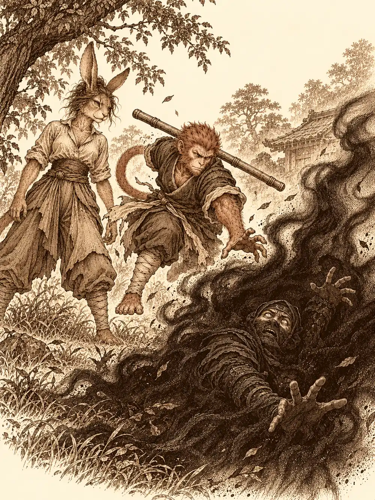

Capítulo 174
Corrosión abisal
Libro X · Hasta pronto, Kuroto
El portal escupió a Sun, a Channi y a Kazuki en el campamento del sur con la luz gris de primera hora. Sirth los había llamado por carta. Arriba, en la loma donde se reunían los generales, el clérigo hablaba con Jin y con Véspera sobre un mapa extendido en una mesa de campaña.
Kazuki llegó el último, despeinado, con una mano en la cadera y la otra rascándose la cabeza. Se había quedado dormido sobre los papeles del consejo. Fue derecho hacia Jin y se le acercó al oído.
"Hay dos cosas. Una mala y otra menos buena. Bueno, las dos son malas. La menos mala es que tenemos que reorganizarnos para el consejo. La peor es que han secuestrado a la niña".
"¿Qué niña?".
"La de los chispazos no. La que no está aquí".
A Jin se le borró la cara.
"Dime que es una broma".
"Ojalá. Y el que se la ha llevado es, al parecer, un viejo conocido de nuestro compañero grandote. Banzo lo reconoce por cómo escribe. Lo llama Dos Caras. La cita es en la playa donde le dio la paliza".
"Banzo, maldita sea. Siempre ocultándonos cosas". Jin apretó los puños. "Terminemos con esto de una vez".
Sirth precisó después que la cita era dentro de dos días. Jin quería que alguien empezara a buscar ya, a investigar al secuestrador, a hacer algo. El clérigo le recordó que la carta decía dos días y la playa, y que lo que tocaba ahora era el sur.
Entretanto, Sun le contó a quien quiso escucharlo que se había convertido en el maestro espiritual de Kurobane, o algo así, desde que Véspera le había arrancado las sombras. La general lo oyó.
"Le vi algo cuando lo conocí. No solo su forma de comportarse. Su aura me recordó a la de mi señor antes de todo esto. No quería que nadie siguiera sus pasos. Así que se lo arranqué". Hizo una pausa. "Podría haberlo hecho con más tacto".
Channi había llegado más tranquila que otras veces. Después de ver a Tiari torturar a un hombre, se había apartado de las Cuchillas Negras y se sentía mejor con los cazadores. Véspera la miró de arriba abajo.
"¿Eres una yokai?".
"No creo, pío. No sé, pío. Supongo que no, pío".
"Entonces mantente siempre detrás de mí y de mi escudo".
Véspera recordaba el siguiente campamento.
"Es el de Aragoria. Una general completamente fanática de mi señor. Ya no lo sigue por respeto ni por deber. Es una lealtad que roza la locura. Ha levantado un altar enorme en su nombre. Y tiene un ácido tan corrosivo que es capaz de mellar incluso las armaduras más poderosas".
"Una víbora", dijo Sun.
"Sería una forma bastante suave de describirla".
Antes de salir, la general tocó a Sun y a Kazuki con la mano y les dejó una protección contra lo que iba a venir. Channi repartió unas semillas que, según ella, también protegían.
Cruzaron otra vez la Puerta Negra. Pasaron por uno de los campamentos que habían arrasado y lo encontraron vacío: los demonios no habían vuelto a ocuparlo. Más allá, el shogunato estaba levantando pequeñas empalizadas, puestos de avanzada para que el enemigo encontrara resistencia antes de llegar a sus tierras. Parecía que la muerte de los generales estaba haciendo retroceder a las tropas de Otakemaru.
El campamento de Aragoria se veía desde lejos. Por encima de la muralla de troncos asomaba un edificio de columnas y, en lo alto de las columnas, estatuas de yokai, de demonios y, sobre todo, de Otakemaru. De entre ellas salían luces mágicas.
"No sé si los míos sabrán ya de mi traición", dijo Véspera. "No sé si la carta del prisionero funcionaría por segunda vez".
Decidieron entrar por dos lados. Jin y ella irían de frente. Sun y Channi se convirtieron en cucarachas, el mono con sus antenas y la pequeña con un pico ridículo, y se fueron por detrás buscando un hueco. Kazuki buscaría otra forma de entrar, por el aire.
"Voy a intentar batirme en duelo con la general", le dijo Véspera a Jin. "No prometo que el resto de los demonios no se meta".
"Estaré cuidando tu espalda en lo posible".
"No te preocupes por mi espalda, sino por la tuya. Ponte detrás de mí y deja que yo me lleve los golpes fuertes y el ácido".
Las cucarachas encontraron un agujero en la empalizada y se colaron. Al salir, Channi rozó la madera y sonó un pequeño golpe. Kazuki se elevó por los aires y los guardias lo vieron enseguida, así que siguió subiendo hasta posarse en el hombro de una de las estatuas como un pájaro, con el estoque preparado.
Jin y Véspera subieron por las escaleras del edificio, que se alzaba a la altura de cuatro hombres sobre el suelo. Arriba, ante el altar, los esperaba Aragoria.
"Así que es cierto. Ayudas a los humanos".
"No voy a permitir que mueran más de los míos".
"No vas a detener la hora. Ahora que estamos tan cerca. Ahora que Otakemaru está casi despierto". Se volvió hacia sus soldados. "Matadla".
Véspera tensó la mandíbula.
"Demostraré que el camino de mi señor ha errado. Pero aún mantendré vivo su deseo".
Y cargó.
Alrededor del altar había tengu, bestias del trueno que escupían rayos y serpientes enroscadas en las columnas. Véspera trazó un círculo protector a su alrededor y Jin desplegó su aura, y así aguantaron los primeros golpes mientras los infiltrados buscaban su sitio. Pero allí había quien veía lo que se esconde, y el ruido había alertado a los guardias.
Aragoria señaló a Channi y a Kazuki con dos dedos y los dos desaparecieron. Kazuki intentó cortar el conjuro a tiempo y no pudo. Se encontraron en otro lugar, fuera de aquel mundo, sin poder hacer nada más que esperar. La general tenía que sostener aquello con toda su concentración, y mientras lo sostuviera no volverían.
Sun salió de su forma de cucaracha y se multiplicó en copias de sí mismo que confundieron a los enemigos. Detuvo el tiempo para cambiar de sitio a su antojo. Véspera habló a una de las bestias del trueno y la criatura se retiró del combate. Los demás seguían allí.
La general buscó a Aragoria cara a cara. La fanática le respondió con ácido, y el ácido corroía la armadura de Véspera y la de Jin, que se iban picando y humeando como metal viejo. Sun encadenó intentos de derribarla, palmas que buscaban dejarla sin aire, golpes en las rodillas, y por fin consiguió tirarla al suelo. Jin llegó hasta ella y descargó todo lo que tenía.

La concentración de Aragoria se quebró. Channi y Kazuki volvieron de golpe al campo de batalla.
Aragoria murió sin rendirse, y al morir reventó. Una explosión de ácido alcanzó a Sun, a Jin y a Véspera, que se quedaron con la piel quemada y las armaduras agujereadas.
Los que habían vuelto no perdieron el tiempo. Kazuki deshizo enemigos con su magia y les lanzó meteoritos; Channi repartió luz y curas. Jin acabó con las serpientes. Sun siguió peleando en su lado aunque le dolía todo el cuerpo. Véspera se interpuso una vez más y le cortó la cabeza a la última bestia del trueno.
Los cuerpos de los transformados se deshicieron como los de los demonios. Sun se quedó mirando el sitio donde había caído aquella bestia, porque quería su piel para hacerse un faldón y ya no quedaba nada.
Véspera subió al altar para ver qué era lo que recitaba Aragoria. Había huesos, velas negras, sangre y trozos de carne. En el centro, un volumen escrito en la lengua del abismo, lleno de cánticos y letanías, como un libro sagrado. Jin no se paró a leerlo: lo cogió y lo metió en la mochila.
La general no quiso marcharse todavía. Se acercó a uno de los dos fosos y se asomó a escuchar.
Desde el fondo llegaba una voz pequeña.
Bajó volando y encontró a un yokai peludo, una bola de polvo con ojos que temblaba entre los huesos. Le dio una poción, le dijo que aguantara, que pronto lo sacaría, y lo tomó en brazos. Salió disparada hacia arriba con la criatura apretada contra el pecho.
Kazuki se asomó al otro foso y también oyó algo. Le brotaron en la espalda unas alas de mariposa y bajó. Allí abajo, una criatura con caparazón le pidió ayuda en silvano. Era un kappa. Kazuki lo subió a la superficie y Channi lo curó.
Habían temido no poder salvar a nadie. Habían salvado a dos.
"Cuando se recuperen", dijo Véspera, "que puedan vivir lejos del frente".
Jin explicó por qué tenía tanta prisa. Véspera trazó un círculo en el suelo y del abismo salió Jezebel, enfurruñado.
"¿Para qué me llamas?".
"Necesito un favor. ¿Podrías llevar a Jin al campamento lo más rápido posible?".
"¿A ese? Está sucísimo. Aquí no se monta nadie así. Tengo una reputación, ¿sabes? Soy el caballo más bonito de todo el infierno".
"Lo sé, Jezebel. Te prometo un baño digno de tus patas. Te cepillaré las crines mil veces, como a ti te gusta".
"Con manteca de cacahuete. Y sales de baño que hagan burbujas como la lava. Y me pondrás los rulos de hueso".
"Te pondré los rulos de hueso".
El corcel se dio la vuelta y le ofreció la grupa a Jin.
"Te llevará raudo", dijo Véspera. "Si ves por ahí al chico al que le arranqué las sombras, dile que me busque. Si todavía se atreve a hablar conmigo".
Jezebel se fue volando con Jin encima.
Los demás volvieron caminando, con los dos rescatados. Sun se puso a la altura de la general.
"Ahora que hablas del ninja. Gracias a ti me está tocando hacer de niñera. ¿Qué le hiciste? Me dijo que lo cogiste del cuello, que lo levantaste del suelo, que te transformaste en algo negro con ojos rojos. Lo dejaste muerto de miedo".
"Me recordó a mi señor antes de que todo sucediera. No quería que despertara otro mal que azotara estas tierras. No era mi intención asustarlo. Aún me cuesta entender las emociones de vuestras especies".
"Pues para otra vez: estrangular y levantar del suelo, mal. Así no haces amigos".
"¿Entonces cómo debería trataros?".
Sun le tendió la mano. Véspera se la miró, la cogió y apretó.
"Afloja un poco. Un poco menos. Afloja. Así. Ahora se mueve un poquito arriba y abajo. Esto es un saludo. Así se presenta uno a la gente, en lugar de cogerla del cuello".
"Tenéis una forma muy rara de saludaros".
"Depende del yokai. Hay algunos que se huelen el trasero".
Véspera se quedó pensándolo. Luego dijo que quería volver a hablar con el ninja y guiarlo un poco, que le recordaba demasiado a lo que había sido su señor y no quería que se repitiera.
Pasaron junto a los heridos. Sun reconoció al bicho de polvo; había tenido un par como él en una base antigua, que se dedicaban a limpiar y luego a ensuciar lo limpiado. Hablaron de los yokai que ya vivían con el gremio, de cómo convivían. Quedaba otro general por vencer, y en Sho una niña a la que alguien tenía que ir a buscar.
En el parque, Serafina, Sun y Kurobane reanudaron la práctica en la sala blanca de la mente de Kurobane. Sun encontró un cuadro deteriorado con una mano pálida y un muñeco. Al tocarlo surgió una figura que llamó al ninja cobarde, traidor y asesino. Kurobane reconoció la voz y le respondió que aquel día había entrenado hasta quedarse dormido, que no sabía que habría un ataque. Las cicatrices que llevaba por sus compañeros muertos empezaron a sangrar. La figura se derritió y de ella salieron otras sombras armadas, y una de ellas se burló de sus nuevos maestros, habló del propósito para el que lo habían creado y dijo que tenía hambre. La presencia echó a Serafina y a Sun de la sala. Abrieron los ojos en el césped a tiempo de ver cómo una sombra se tragaba también el cuerpo del ninja mientras él sangraba, con el terror en la cara. Sun saltó hacia él demasiado tarde. Se quedaron un rato mirando el lugar vacío. Serafina lo abrazó. El mono dijo que su propia oscuridad lo había atrapado y que tendría que volver por sí mismo. Al final se levantaron y siguieron adelante.
En el palacio, Kazuki mandó llamar al consejo y a Guxi. Les dijo que iba a anunciar el fin de los cazadores y el nacimiento de otra cosa, a la que de momento llamaba los Guardianes de Kuroto, y que quería ser su portavoz.
"Seremos", lo corrigió Guxi.
Tomando el té, Kazuki le contó que Banzo le había hablado de los ronin que seguían protegiendo la tierra después de perder a su señor, y que de ahí le había venido el nombre. Querían proteger a la gente de Kuroto y también a los yokai. Guxi no estaba seguro de que el nombre los definiera del todo, pero estaba de acuerdo en lo que importaba. Faltaban todavía los nobles. Lo dejaron para el día siguiente.